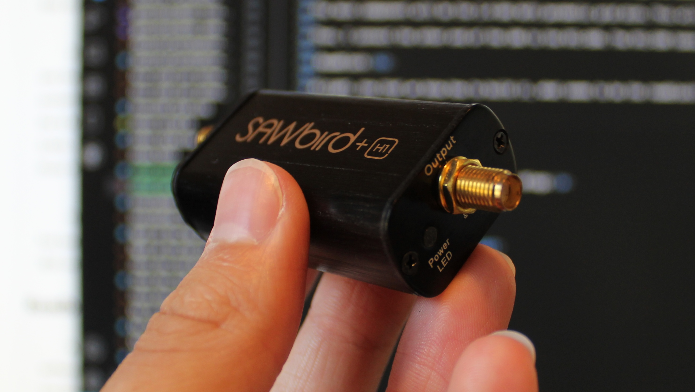

In the previous blog, I shared what components I planned to buy, and shortly after that, I ordered them. It took a bit of time for them to arrive, but now I have them all. I bought a 2.4 GHz WiFi parabolic grid dish, a low-noise amplifier, an RTL-SDR Blog V3, a Type N Male to SMA Male adapter, a 16ft USB extension cable, and a 50 Ohm terminator. These all sound really complex, but I'll soon explain what they do and what their purpose will be in the radio telescope, so it's a bit easier to digest.
The main component will be the 2.4 GHz WiFi parabolic grid dish. This will be pointed straight up into the sky and will pick up signals from the Milky Way. While this isn't its designed purpose, it's still something it is capable of. The dish has a wire that comes out of the back. That's where I'll screw on the N Male to SMA Male adapter. On the other side of that adapter, I will plug in the low-noise amplifier (LNA). What this allows me to do is take the signals the dish is picking up and specifically amplify the signals coming from the Milky Way. Below is an image of what it looks like.
Then, I connect the other end of the LNA to the RTL-SDR. The RTL-SDR takes the signal after it has been amplified and allows it to be read by a computer. Finally, all you have to do is plug the RTL-SDR into your computer and use a piece of software to analyze that data.
Alright, now that we know how to build it, what seems to be the roadblock? I'll tell you: the software I will be using works perfectly on a Windows computer. The problem with that is I only have one Windows computer, and it's on the second floor of my house. Not only that, it's a desktop, so I can't just pick it up and move it. I have a laptop, but it's a MacBook, and attempting to learn how to use the software on that would take way too long—I just want to make sure that every part I bought for the telescope works.
The way I plan to solve this is by using a 16-foot USB extension cable. I'll plug one end into the RTL-SDR and feed the other end up the side of my house through a window to plug into my computer. This way, I can keep the dish outside, picking up signals while I'm inside using the software to analyze them. I'll start construction this weekend and update you all in about a week after I finish writing the next blog. Until then, have a great Fourth of July!